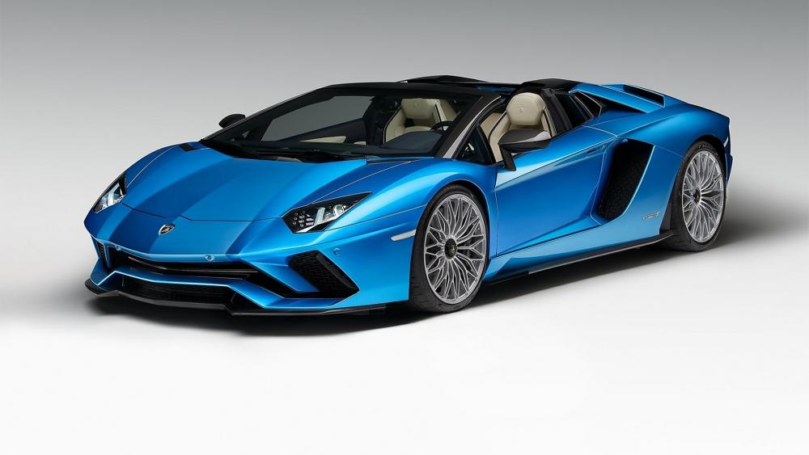
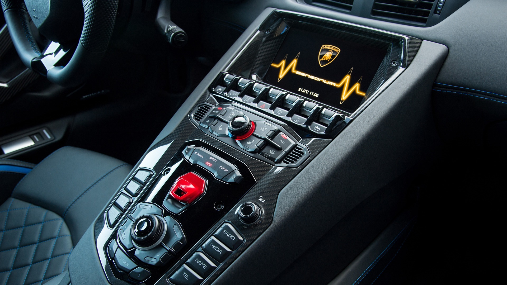
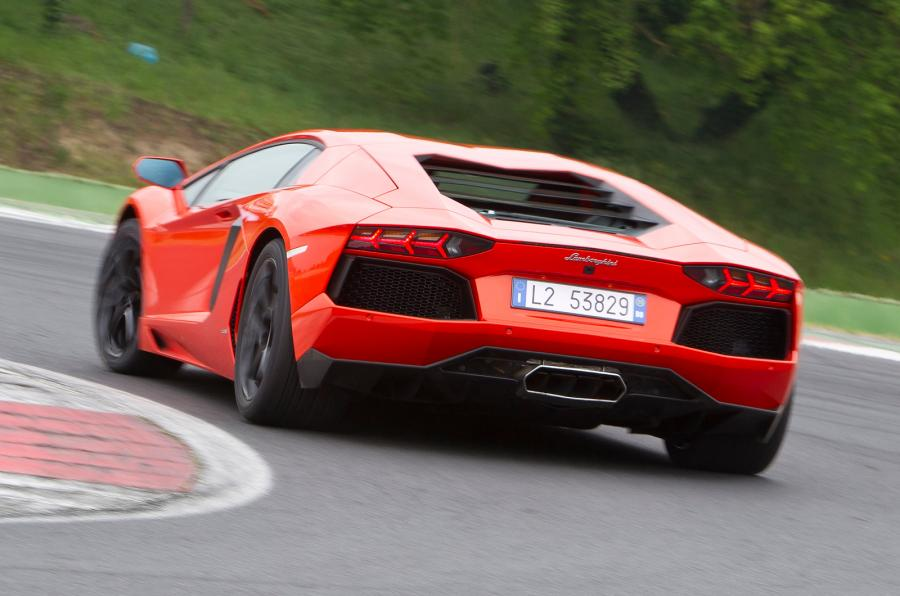

Lamborghini Aventador S



Un’icona non si può reinventare, si può solo sfidare. E solo Aventador poteva superare se stessa.
Dopo Miura, Islero, Countach e Urraco, il modello più iconico della Lamborghini di oggi raccoglie l’eredità degli storici modelli S ed evolve nella nuova Aventador S.
Un’icona non si può reinventare, si può solo sfidare. E solo Aventador poteva superare se stessa.
Dopo Miura, Islero, Countach e Urraco, il modello più iconico della Lamborghini di oggi raccoglie l’eredità degli storici modelli S ed evolve nella nuova Aventador S.
L’esclusività del design Lamborghini e un nuovo motore V12 da ben 740 CV si uniscono ora alla più sofisticata tecnologia di gamma, che con la nuova LDVA (Lamborghini Dinamica
Veicolo Attiva) regala un’esperienza di guida senza paragoni a tutti coloro che onorano il proprio ego sfidando se stessi ogni giorno.
Gli interni della nuova Aventador S rispecchiano appieno la missione dell’auto, ovvero quella di essere diversa tra tutte: un’auto super sportiva con una tecnologia all’avanguardia, ma altamente lussuosa.
Le finiture interne sono realizzate con materiali di altissima qualità e presentano una varietà infinita di possibilità, come la nuova configurazione S-trim, nata per celebrare il nome dell’auto.
Tra le opzioni, anche la possibilità di scegliere un materiale innovativo come il Carbon Skin® e di apprezzare alcune parti della scocca in carbonio lasciate in vista.
L’eleganza dell’interno si sposa con una tecnologia estremamente avanzata, come quella del quadro strumenti, con un display TFT interattivo a cristalli liquidi dalle grafiche
totalmente ridisegnate, e la possibilità di esaltare gli interni con un sistema di illuminazione LED creato ad hoc.
Vai alla scheda tecnica